4 events, 10 points
Court
Sports, teamwork, and discipline.
About my Court experiences
My Court experiences give me opportunities to participate in sports, work with others, and learn the value of teamwork and discipline. Through these activities, I hope to improve my physical well-being, develop sportsmanship, and build stronger relationships with my fellow students.
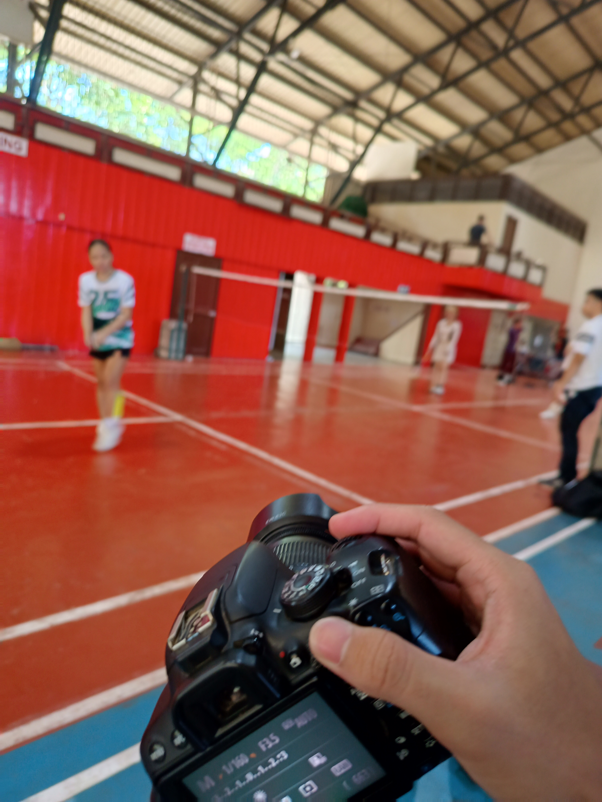
CCS Sportsfest Men and Women’s Badminton
September 30, 2026, 8:30 AM
2 points
CCS Sportsfest Men and Women’s Badminton
September 30, 2026, 8:30 AM 2 pointsReflection
On September 30, 2026, I covered the CCS Sportsfest Men's and Women's Badminton competition at the Silliman University Gym as part of the Documentation Committee. I worked alongside Andrea De Jesus while documenting the games. Java + Ruby dominated the competition and became the champions in both the Men's and Women's divisions.
I enjoyed watching the Men's Badminton games the most because the players were very aggressive and competitive. Since I was focused on documenting the event, I was able to watch the games while taking photos and capturing different moments from the matches. I enjoyed seeing the intensity of the games, even though I was not personally competing.
This activity was mainly an enjoyable experience for me rather than something that gave me a major realization. However, it made me enjoy sports photography even more. I would definitely volunteer to shoot another sports event because I like capturing the energy and intensity of the games.
Because of this activity, I am more interested in photographing sports events and capturing the intensity of competition through my photos.
Evidence of participation
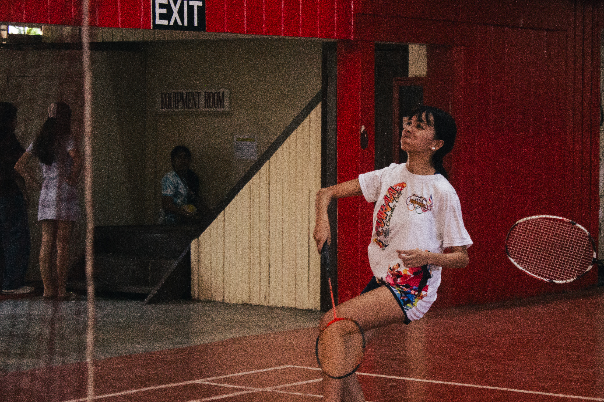
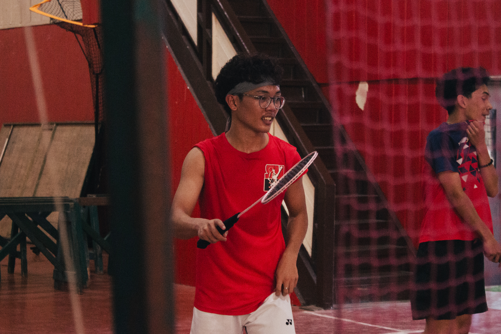
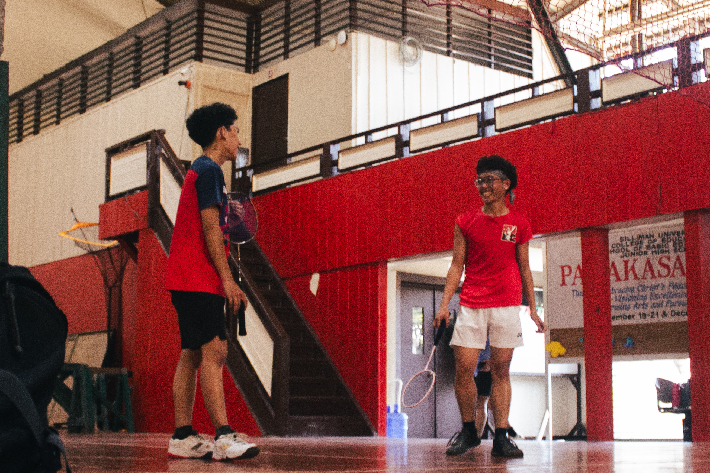
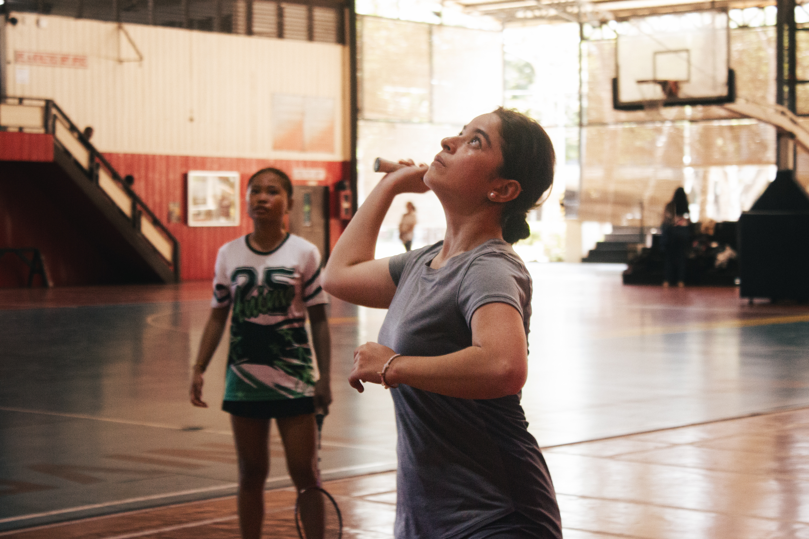
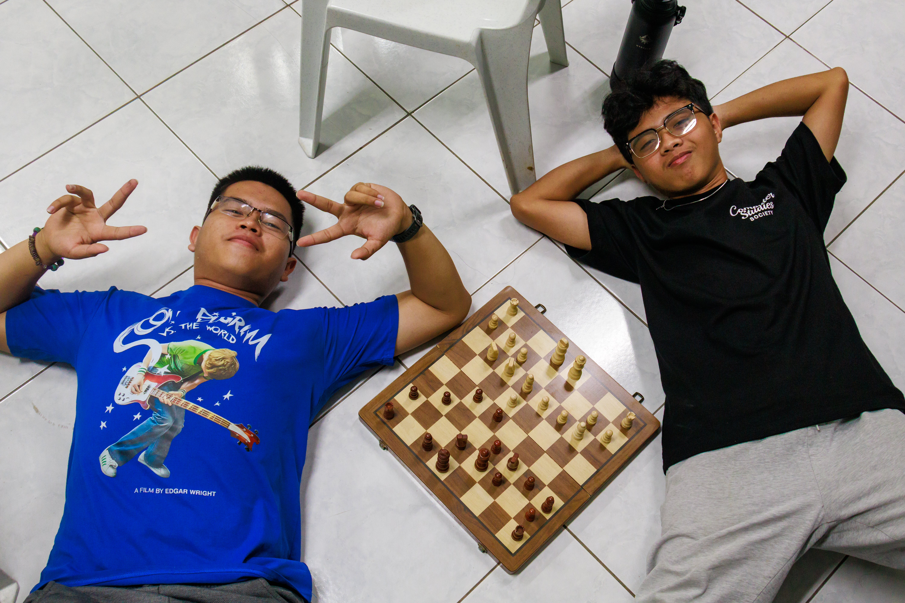
CCS Sportsfest Men’s Chess
September 30, 2026, 3:00 PM
4 points
CCS Sportsfest Men’s Chess
September 30, 2026, 3:00 PM 4 pointsReflection as a player
On September 30, 2026, I participated in the CCS Sportsfest Men's Chess competition at ATA Hall in the UCS Building. The CCS Family was divided into six houses: Python, Pearl, Java, Ruby, C, and Dart. For the Sportsfest, Python was paired with Pearl, Java with Ruby, and C with Dart. I played for Python × Pearl alongside Vincent and Edsel. The competition used a round-robin format, and our team won all four of our games with a 4–0 record, making us the champions.
I enjoyed playing chess and analyzing games with the other players. One memorable moment was when one of my opponents blundered several pieces and eventually accepted his defeat. 💀 Beyond the competition itself, I enjoyed being able to play against other students and see how they approached their games.
The experience reminded me that chess requires careful analysis and decision-making, even when the game seems simple. It also made me realize that there are not many strong chess players in CCS—including myself. Still, winning the competition made me want to keep playing and improving. I would definitely participate again if given the opportunity.
Because of this activity, I am more motivated to keep playing chess, improve my skills, and challenge myself against better players.
Reflection as a documentation committee member
Aside from playing in the CCS Sportsfest Men's Chess competition, I was also part of the Documentation Committee for the event. My role was to document the games and capture moments from the competition while also participating as one of the players for Python + Pearl. Having both responsibilities made the experience more interesting because I was not only competing but also helping record the event for the CCS community.
Being part of the Documentation Committee also taught me that covering an event requires attention and patience. I had to focus on the games while looking for moments that were worth capturing. It was also interesting to photograph an activity that I was personally participating in because I could experience the event as both a player and a documenter.
Overall, I enjoyed being part of the Documentation Committee and would definitely volunteer for similar events again. It gave me more experience in event documentation while allowing me to combine it with something I already enjoy—photography and sports.
Because of this experience, I am more comfortable taking on both participant and documentation roles in events and more interested in continuing event photography.
Evidence of participation
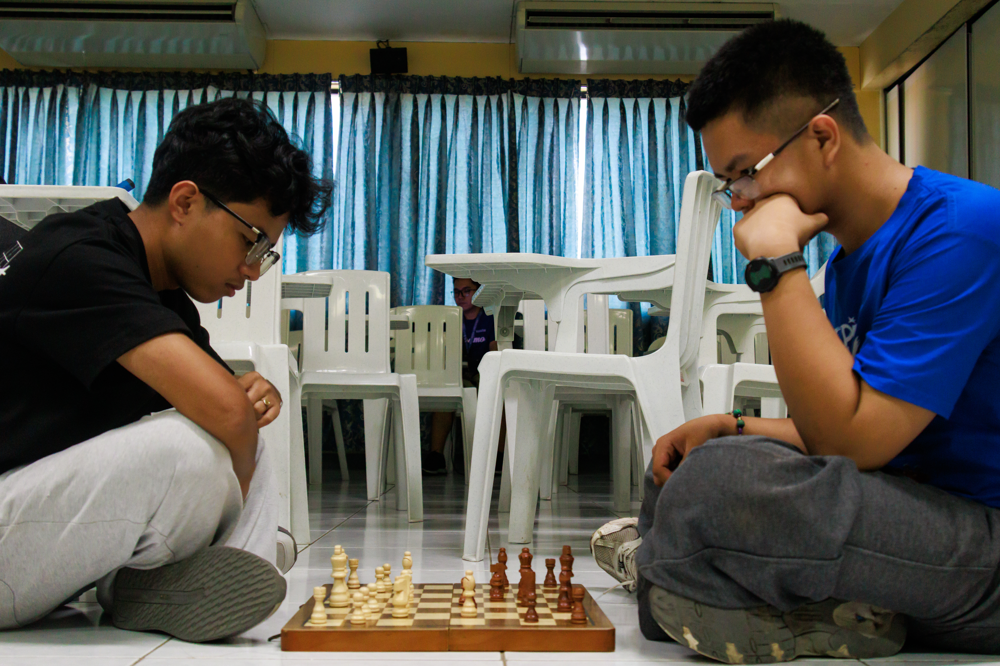
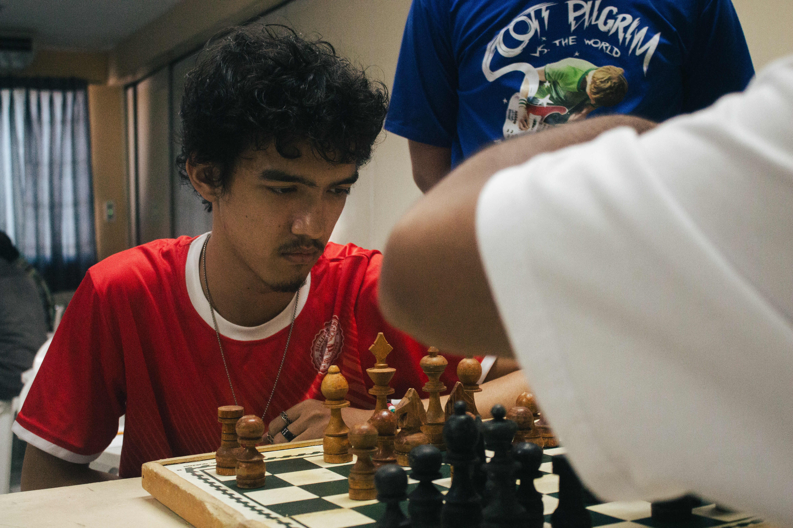
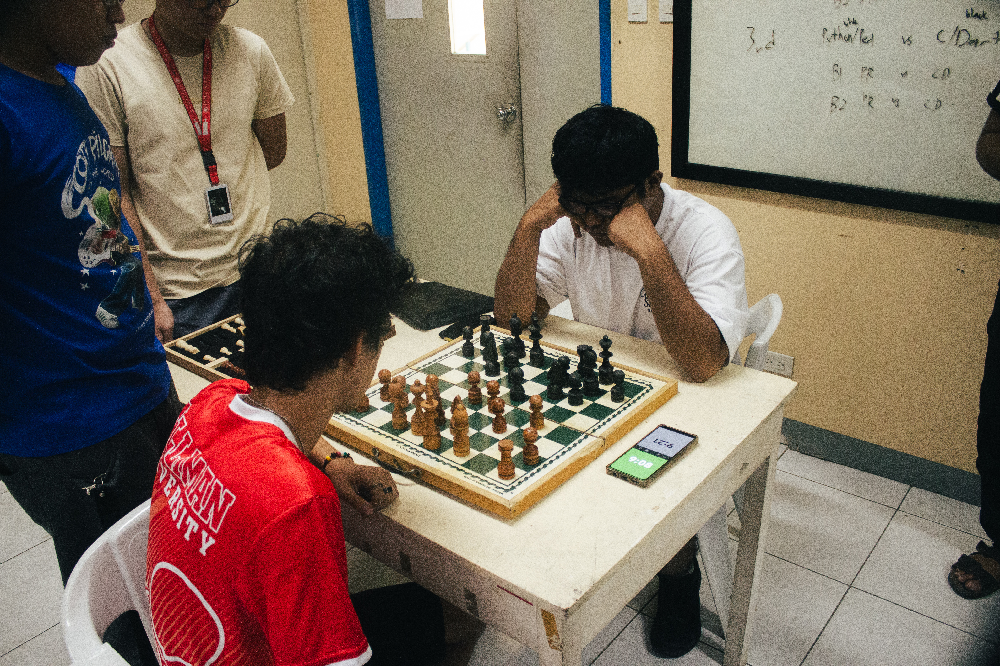
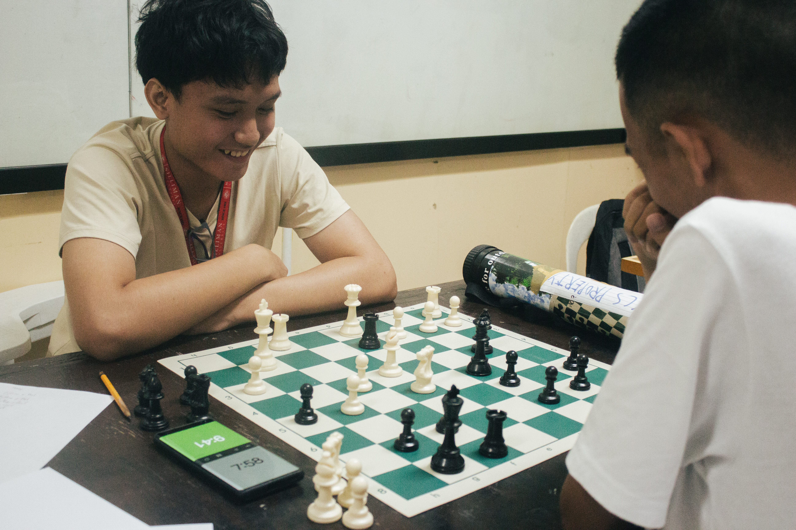
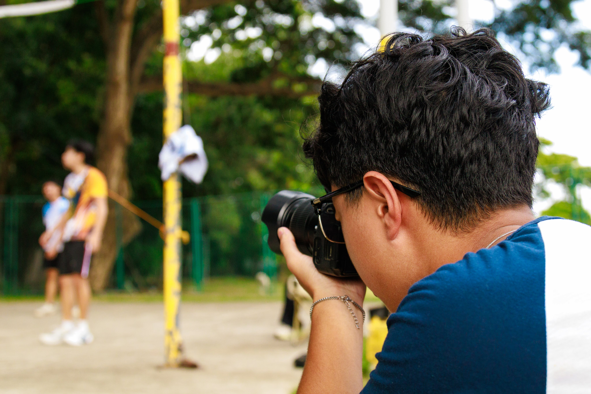
CCS Sportsfest Men’s Basketball
October 3, 2026, 2:30 PM
2 points
CCS Sportsfest Men’s Basketball
October 3, 2026, 2:30 PM 2 pointsReflection
During the CCS Sportsfest, I was also part of the basketball documentation committee, where I took photos of the games. My goal was to capture the players' efforts and the memorable moments throughout the competition.
One of the challenges I encountered was the decreasing amount of light, especially since my shutter speed was set to 1/200s. I needed more light to capture the action properly, but increasing my ISO made the images noisier. Thankfully, I could still work on improving the photos during post-processing with Lightroom. Despite these challenges, one of the most memorable parts was seeing our house win again! I also noticed how competitive both Java vs. Ruby and Python vs. Pearl were, with both teams giving their best to win.
Moving forward, I want to improve my skills in photographing sports under different lighting conditions. This experience reminded me that documenting sports requires not only timing but also adjusting camera settings to suit the situation. I also learned to appreciate the effort and competitiveness of the players, even when I am focused on capturing the game through my camera.
Because of this activity, I am more aware of the technical challenges of sports photography and more appreciative of the dedication and competitiveness shown by the players.
Evidence of participation
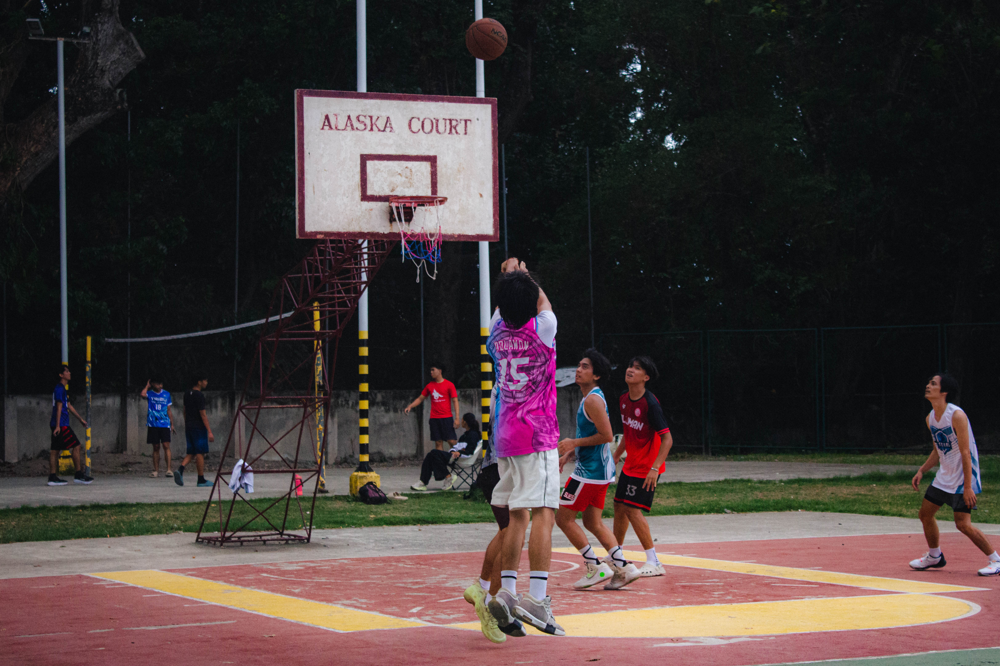
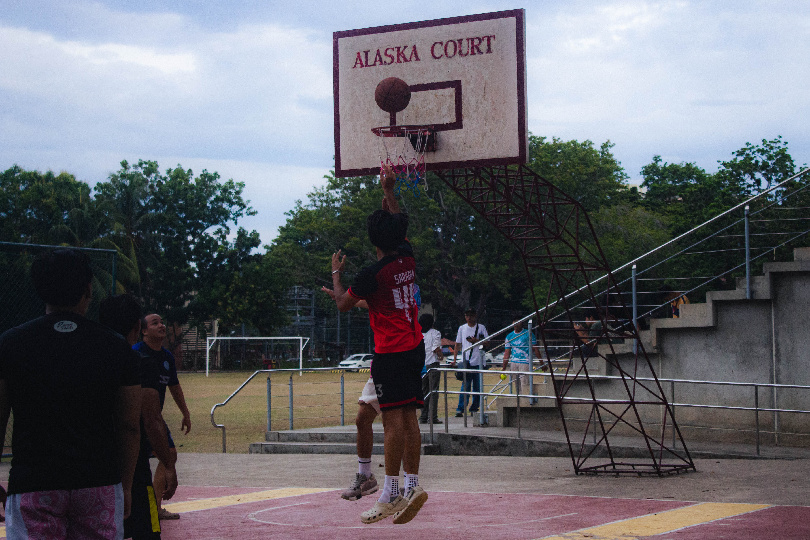
CCS Sportsfest Men’s Volleyball
October 3, 2026, 2:30 PM
2 points
CCS Sportsfest Men’s Volleyball
October 3, 2026, 2:30 PM 2 pointsReflection
During the CCS Sportsfest, I was part of the volleyball documentation committee, where I took photos of the games and tried my best to capture the best moments possible. I wanted to get good shots of the players during their serves, spikes, sets, and receives.
The most challenging part of this experience was capturing the best moments in a fast-paced sport like volleyball. There were many potential money shots that I missed because I was either not ready for the moment or my camera's shutter response was too slow. Despite these challenges, one of the most memorable parts of the experience was seeing our house win. It made the tiring process of documenting the game more enjoyable and exciting.
Moving forward, I want to improve my timing and anticipation when photographing sports. This experience taught me that sports photography requires patience, quick reactions, and preparation to capture important moments. Although it was tiring, I still found the experience fun and rewarding.
Because of this activity, I am more aware of the challenges of sports photography and more motivated to improve my skills in capturing fast-paced moments.
Evidence of participation
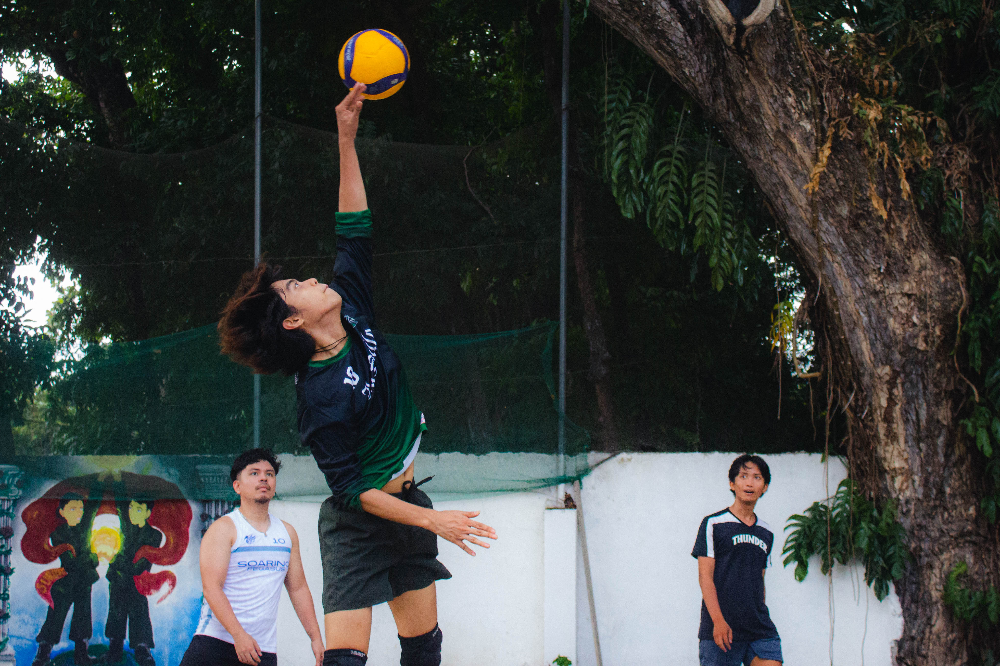
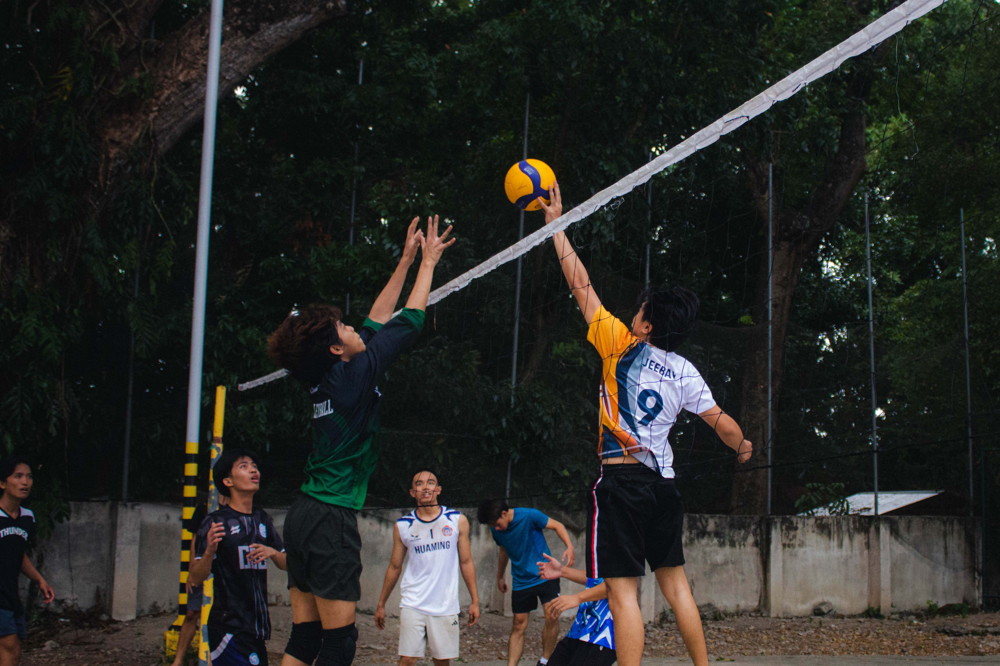